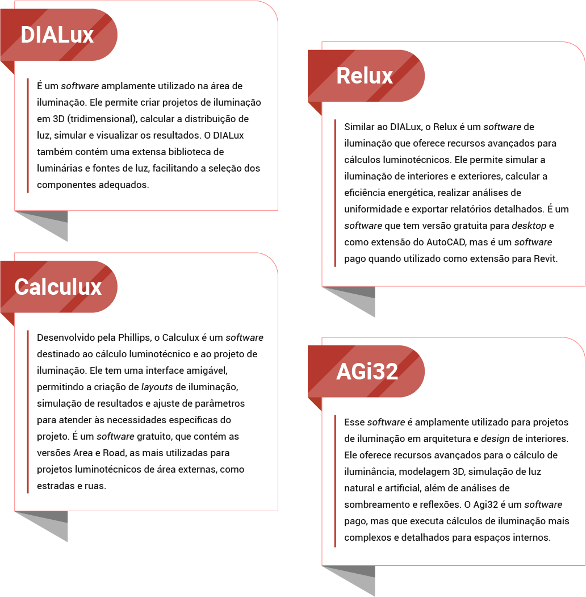
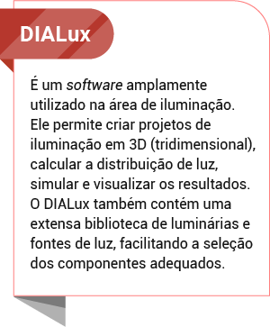
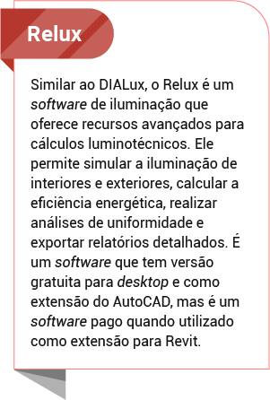
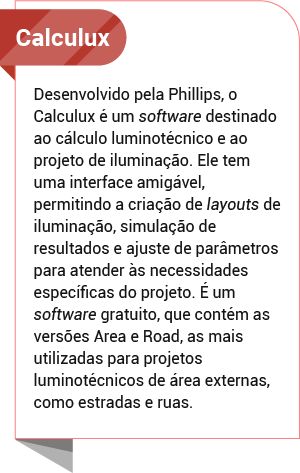
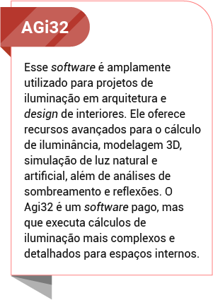
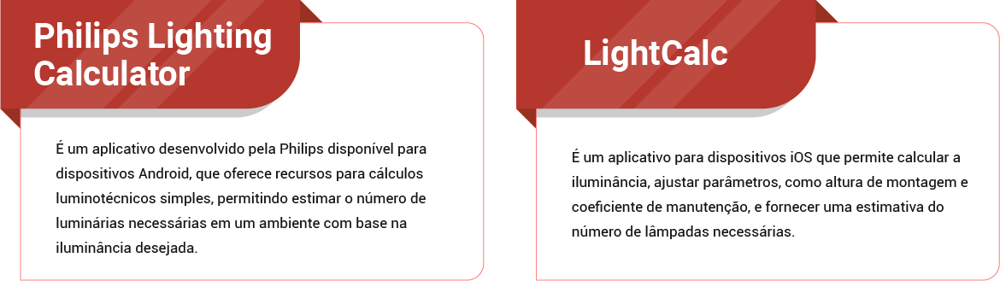
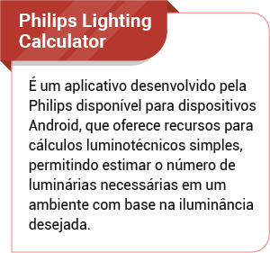
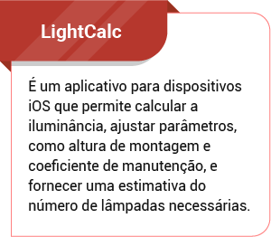

O cálculo luminotécnico é uma importante etapa no projeto de iluminação de ambientes que visa garantir a adequada distribuição de luz para atender às necessidades visuais, estéticas e de conforto dos usuários. Existem normas técnicas e requisitos específicos que orientam esse processo, bem como grandezas e parâmetros a serem considerados. Além disso, existem também softwares, equipamentos e aplicativos que podem auxiliar nessa tarefa, executando cálculos, projetos e medições de iluminação. Você terá aqui alguns desses itens, bem como dois cálculos simples usados para projeto de iluminação.
Iluminação é um assunto sério e existem normas que estabelecem os critérios necessários para que a iluminação do ambiente seja feita corretamente, sendo confortável ao usuário que esteja executando alguma determinada tarefa ou até mesmo descansando. Já existem diversos estudos que mostram como a iluminação afeta diretamente aspectos fisiológicos, interferindo na produtividade, no descanso e na recuperação da saúde de um indivíduo, podendo inclusive contribuir para a causa de algumas doenças.
Essas normas trazem todos os parâmetros que foram testados e considerados ideais para cada tipo de situação.
Clique ou toque para visualizar o conteúdo:
Essa Norma Técnica Brasileira (NBR) estabelecia, entre outros parâmetros, os valores de iluminâncias médias mínimas em serviço para iluminação artificial em interiores nos quais se realizem atividades de comércio, indústria, ensino, esporte e outras. No entanto, ela foi substituída pela NBR/ISO 8995-1, de abril de 2013.
No Brasil, a NBR ISO/CIE 8.995-1 estabelece os critérios para o projeto de iluminação de ambientes internos e externos. Ela define valores mínimos de iluminância, que é a quantidade de luz incidente em uma superfície, considerando o tipo de atividade a ser realizada no ambiente. Essa norma também fornece diretrizes para o cálculo do fator de manutenção, que considera o decaimento da iluminância ao longo do tempo de uso do sistema de iluminação. Vale a leitura completa dessa norma para você estar a par da iluminância adequada para diferentes tipos de ambientes.
Embora essa norma forneça parâmetros para diversos tipos de ambientes comerciais e corporativos, ela não inclui parâmetros específicos para projetos residenciais. No entanto, ao analisar os parâmetros mencionados, é possível extrair as seguintes diretrizes para projetos residenciais:
| Ambiente | Iluminância mínima/média/máxima (lux) |
|---|---|
| Sala – Luz geral | 100 – 150 – 200 |
| Sala – Ler, estudar, costurar | 300 – 500 – 750 |
| Sala de jantar | 150 – 200 – 300 |
| Dormitórios – Luz geral | 100 – 150 – 200 |
| Dormitórios – Cabeceira cama | 200 – 300 – 500 |
| Cozinha – Luz geral | 100 – 150 – 200 |
| Cozinha – Fogão, pia, mesa | 200 – 300 – 600 |
| Lavanderia | 300 – 400 – 450 |
| Banheiro – Luz geral | 100 – 150 – 200 |
| Banheiro – Luz espelho | 200 – 300 – 500 |
| Hall/Circulação | 75 – 100 – 150 |
| Escadaria | 100 – 150 |
| Escritório – Mesa de trabalho | 300 – 500 – 700 |
| Garagem | 50 – 75 – 150 |
Tabela 1 – Iluminância ambientes residenciais
Fonte: Senac EAD (2023)
O cálculo de iluminação envolve uma série de requisitos que devem ser considerados para garantir a eficiência, o conforto visual e a conformidade com as normas técnicas. Alguns dos requisitos mais importantes são:
Clique ou toque para visualizar o conteúdo:
É essencial seguir as normas técnicas estabelecidas por órgãos reguladores, como a ABNT (Associação Brasileira de Normas Técnicas) no Brasil. Como dito anteriormente, essas normas definem os critérios e parâmetros para iluminância, uniformidade e outros aspectos relacionados à iluminação de diferentes tipos de ambientes, visando garantir o conforto do usuário e evitar o ofuscamento no ambiente.
Cada tipo de ambiente tem requisitos específicos de iluminação. Por exemplo, um escritório requer uma iluminação adequada para tarefas de leitura e trabalho em computador; uma área de produção industrial precisa de iluminação mais intensa e direcionada; por outro lado, um dormitório precisa de uma iluminação menos intensa, que ajude a criar uma atmosfera acolhedora e aconchegante, que ajude o indivíduo a relaxar. É importante compreender as características e necessidades do ambiente em questão.
A iluminância é a quantidade de luz incidente em uma superfície e é medida em lux (lx). Ela varia de acordo com o tipo de atividade realizada no ambiente. As normas técnicas geralmente definem os níveis mínimos de iluminância exigidos para cada tipo de ambiente, considerando fatores como conforto visual, segurança e tarefas específicas.
As características das lâmpadas e luminárias, como o fluxo luminoso (lm), a intensidade luminosa (cd) e a luminância (cd/m²), devem ser consideradas nos cálculos de iluminação. Essas características afetam a qualidade da luz, a percepção das cores e a atmosfera do ambiente. Alguns desses parâmetros são usados somente em cálculos mais específicos, outros são usados em cálculos mais simples, como você aprenderá em seguida.
Além da iluminância adequada, é importante garantir uma distribuição uniforme da luz no ambiente. Isso evita contrastes excessivos e áreas de sombra que possam prejudicar a visibilidade e o conforto visual. As normas técnicas geralmente estabelecem valores mínimos de uniformidade, definindo a relação entre as iluminâncias máxima e mínima em um determinado espaço, ou seja, informando quantos lux devem ser percebidos no ponto do ambiente no qual a luz será mais intensa, bem como no ponto no qual a luz será a mais fraca. Ambos os valores devem estar de acordo com as normas, a fim de garantir que a iluminação esteja distribuída de forma adequada em todo o ambiente. Uma iluminação mal distribuída gerará desconforto visual ao usuário.
A eficiência energética é um requisito cada vez mais importante nos projetos de iluminação. Devem ser selecionadas lâmpadas e luminárias que proporcionem uma boa iluminação com o mínimo consumo de energia. O uso de tecnologias mais eficientes, como lâmpadas em LED (light emitting diode, ou diodo emissor de luz), tem sido cada vez mais recomendado para reduzir o consumo e os custos de energia, por terem essas lâmpadas uma vida útil mais longa e um consumo energético menor em comparação com outras.
Para realizar o cálculo luminotécnico, é necessário conhecer algumas grandezas fundamentais.
Como já dito anteriormente, a iluminância é medida em lux (lx) e indica a quantidade de luz que incide em uma superfície. Para determinar essa grandeza, é preciso basear-se nas normas técnicas existentes, que informam as quantidades mínimas, médias e máximas de lux para que o ambiente possa ser considerado confortável. O fluxo luminoso é medido em lumens (lm) e representa a quantidade total de luz emitida por uma fonte luminosa. Essa é a grandeza que deve ser descoberta para que depois se possa escolher e distribuir as luminárias necessárias no projeto. Além dessas duas grandezas, é preciso também saber a área, em metros quadrados (m²), do espaço ou da superfície a ser iluminada, bem como a altura, medindo a distância da superfície até a fonte luminosa que está sendo proposta. A altura deve ser medida em metros (m).
Existem diversos tipos de cálculos de iluminação diferentes, desde os métodos mais simples até os mais completos, que consideram os fatores de utilização, depreciação e perda de luz da lâmpada. Por isso, é possível aprofundar-se bastante nesta área de iluminação, sendo essa uma especialidade das áreas do design e da arquitetura.
Neste conhecimento, você verá dois métodos simples de cálculo, que já contribuirão para um projeto de iluminação bem projetado e com parâmetros adequados: método dos lumens e método ponto a ponto. Observe-os a seguir:
O método dos lúmens é um cálculo luminotécnico simplificado, que procura descobrir o fluxo luminoso (lm), ou seja, a quantidade de luz emitida pelas lâmpadas, necessário para um determinado ambiente. Para utilizá-lo, é necessário conhecer a iluminância média desejada para o ambiente em lux (lx) e a área a ser iluminada em metros quadrados (m²).
Para realizar esse cálculo, é preciso seguir os seguintes passos:
1. Calcular a área (m²) do ambiente ou da superfície a ser iluminada.
2. Buscar na norma (NBR/ISSO 8.995-1) qual é a iluminância adequada para o tipo de ambiente ou para o tipo de atividade que acontecerá nesse ambiente.
3. Aplicar esses dados na fórmula a seguir:
E = I x M²
Fluxo luminoso (em lumens) é igual à iluminância (em lux) multiplicada pela área em metros quadrados.
Onde:
E = fluxo luminoso em lm
I = iluminância em lx
M² = área em metros quadrados
Após descobrir o valor de E, será possível determinar quantas luminárias deverão ser usadas no ambiente, de acordo com a quantidade de lumens emitida pelas luminárias escolhidas.
O método ponto a ponto é mais detalhado e considera pontos específicos no ambiente. Ele é mais adequado para ambientes complexos ou que requeiram uma distribuição de luz mais precisa. Nesse método, calcula-se a iluminância em pontos selecionados do ambiente, considerando a altura de montagem das luminárias. Esse cálculo é o mais indicado para calcular iluminação direcionada a bancadas e superfícies de trabalho, e é especialmente utilizado com lâmpadas de foco direcionável, como PAR (parabolic aluminized reflector, ou refletor parabólico aluminizado), AR (aluminum reflector, ou refletor de alumínio) e dicroicas.
Para realizar esse cálculo são necessárias as informações sobre a intensidade luminosa da lâmpada em candelas (cd) e a distância da fonte de luz até a superfície de trabalho, medida em metros (m) em uma linha vertical. Com base nesses parâmetros, é possível determinar a iluminância resultante (lx) na superfície e verificar se está em conformidade com a norma estabelecida.
Para este cálculo, é preciso seguir o seguinte passo a passo:
1. Escolher a lâmpada desejada e verificar no catálogo dela qual o valor da intensidade luminosa (cd).
2. Medir a distância da fonte de luz (lâmpada) até a superfície de trabalho. Se você estiver calculando, por exemplo, em uma bancada de estudos, com altura de 78 cm, em um ambiente com 2,6 m de pé direito, a distância entre a lâmpada e a superfície pode ser calculada subtraindo a altura da mesa pela altura do pé direito, desta forma: 2,6 – 0,78 = 1,82m. Assim, descobre-se que 1,82 m é a distância entre a fonte de luz, considerando que ela esteja instalada embutida no forro.
3. Aplicar esses dados nesta fórmula:
I = cd / d²
Iluminância em lux é igual à intensidade luminosa em candelas dividida pela distância entre fonte de luz e superfície de trabalho ao quadrado.
Onde:
I = iluminância em lx
cd = intensidade luminosa em candelas
d = distância entre a fonte de luz e a superfície de trabalho
Esse método é mais utilizado para realizar a conferência do nível de iluminação em uma determinada superfície. Ao fazer esse cálculo, você cruza com as informações presentes na norma e pode verificar efetivamente se a superfície está iluminada o suficiente para uma determinada tarefa. Já o método dos lumens é utilizado para quantificar efetivamente o número de lâmpadas que serão necessárias para iluminar o ambiente.
Cada tipo de ambiente requer uma iluminação específica. Por exemplo, áreas de trabalho exigem uma iluminação mais intensa, enquanto áreas de descanso ou de lazer podem demandar uma iluminação mais suave e aconchegante. A quantificação de lâmpadas e luminárias depende da potência das fontes luminosas escolhidas, da altura de montagem, da distribuição do fluxo luminoso e da área a ser iluminada.
Clique ou toque para visualizar o conteúdo.
Como exemplo, considere que você está realizando o projeto luminotécnico de uma cozinha que tenha 9,5 m². Pela norma, sabe-se que, para essa cozinha, serão necessários 200 lx no máximo para o espaço geral e 600 lx para a iluminação específica de bancada. Considere também que a bancada terá área de 2,7 m² (considerando as medidas de 1,6 m de largura e 0,6 m de profundidade), e haverá uma distância de 65 cm entre bancada e fonte luminosa.
Com essas informações, pode-se realizar primeiro dois cálculos com o método dos lumens para a cozinha no geral e para a bancada:
E = 200 x 9,5
E = 1.900lm
Ou seja, para o ambiente geral, serão necessários no máximo 1900 lumens.
E = 600 x 1,6
E = 960lm
Ou seja, para iluminar a bancada, serão necessários pelo menos 960 lm.
Agora, considere as seguintes escolhas de luminárias:
Clique ou toque na imagem para ampliar a visualização.
Figura 1 – Luminária Archi
Fonte: Stella (c2019a)
A imagem apresenta uma luminária do tipo perfil de embutir na cor branca, com as informações do catálogo identificando a luminária como Archi e com os seguintes dados: “Archi, perfil de embutir recuado 24V 24MM, Realce As Cores Naturais | IRC 93; Archi: uma linha completa de perfis, totalmente nova. Bordas sutis. Corpo de alumínio com abas e lentes retas. Estética limpa e discreta no teto. Design pensado para proporcionar conforto visual. Opções com recuo da fonte luminosa. Disponível em modelos de embutir e sobrepor, todos com três opções de acabamento. Potência 1m: 11,5W; Potência 2m: 23W; Tensão: 24Vcc; Fluxo Luminoso 1m: 470lm; Fluxo Luminoso 2m: 940lm; Ângulo de Abertura: 90°; IRC: >93; R9: >60; Vida útil (L70): 25.000h; Garantia: 2 anos; Material predominante: Alumínio. Inclusos terminais de acabamento e presilhas para fixação”.
Figura 1 – Luminária Archi
Fonte: Stella (c2019a)
A imagem apresenta uma luminária do tipo perfil de embutir na cor branca, com as informações do catálogo identificando a luminária como Archi e com os seguintes dados: “Archi, perfil de embutir recuado 24V 24MM, Realce As Cores Naturais | IRC 93; Archi: uma linha completa de perfis, totalmente nova. Bordas sutis. Corpo de alumínio com abas e lentes retas. Estética limpa e discreta no teto. Design pensado para proporcionar conforto visual. Opções com recuo da fonte luminosa. Disponível em modelos de embutir e sobrepor, todos com três opções de acabamento. Potência 1m: 11,5W; Potência 2m: 23W; Tensão: 24Vcc; Fluxo Luminoso 1m: 470lm; Fluxo Luminoso 2m: 940lm; Ângulo de Abertura: 90°; IRC: >93; R9: >60; Vida útil (L70): 25.000h; Garantia: 2 anos; Material predominante: Alumínio. Inclusos terminais de acabamento e presilhas para fixação”.
Clique ou toque na imagem para ampliar a visualização.
Figura 2 – Luminária painel de embutir
Fonte: Stella (c2019b)
A imagem mostra uma luminária tipo painel de embutir na cor branca, com as informações do catálogo identificando a luminária como Painel de Embutir Eco 6W e com os seguintes dados: “Criadas para garantir praticidade e alto padrão de qualidade, as luminárias LED Stella são soluções integradas, sintonizadas às tendências mundiais em tecnologia. Aliam design moderno e minimalista em produtos que deixam a luz em total evidência; Tensão: 100-240V; Fator de Potência: >0,5; Corrente: 0,08A(127V) / 0,05A(220V); Fluxo Luminoso: 400lm; Eficiência Luminosa: 67lm/W; Ângulo de Abertura: 120°; IRC: >80; Vida útil (L70): 25.000h; Temp. de Operação: 10°C ~ 40°C; Garantia: 2 anos; Material Predominante: Policarbonato; Fonte integrada; Inclusas presilhas para fixação; OBS. Este painel passou por melhoria no IRC, que até então era >70. Os produtos com esse aperfeiçoamento estão chegando às lojas conforme os estoques anteriores esgotam”.
Figura 2 – Luminária painel de embutir
Fonte: Stella (c2019b)
A imagem mostra uma luminária tipo painel de embutir na cor branca, com as informações do catálogo identificando a luminária como Painel de Embutir Eco 6W e com os seguintes dados: “Criadas para garantir praticidade e alto padrão de qualidade, as luminárias LED Stella são soluções integradas, sintonizadas às tendências mundiais em tecnologia. Aliam design moderno e minimalista em produtos que deixam a luz em total evidência; Tensão: 100-240V; Fator de Potência: >0,5; Corrente: 0,08A(127V) / 0,05A(220V); Fluxo Luminoso: 400lm; Eficiência Luminosa: 67lm/W; Ângulo de Abertura: 120°; IRC: >80; Vida útil (L70): 25.000h; Temp. de Operação: 10°C ~ 40°C; Garantia: 2 anos; Material Predominante: Policarbonato; Fonte integrada; Inclusas presilhas para fixação; OBS. Este painel passou por melhoria no IRC, que até então era >70. Os produtos com esse aperfeiçoamento estão chegando às lojas conforme os estoques anteriores esgotam”.
Conforme o cálculo feito anteriormente, para iluminar a bancada da cozinha adequadamente serão necessários no máximo 960 lm e, para iluminar o ambiente geral, no máximo 1.900 lm.
A luminária escolhida para a bancada, conforme informado pelo fabricante, emite 470 lm em seu formato de 1 metro de largura, e a luminária escolhida para o ambiente geral emite 400 lm.
Com essas informações, é possível realizar agora os seguintes cálculos para descobrir quantas dessas luminárias serão necessárias:
1.900 / 400 = 4,75.
Serão necessárias de 4 a 5 luminárias dessas para iluminar a cozinha.
960 / 470 = 2,04.
Serão necessárias 2 luminárias dessas para iluminar a bancada da cozinha adequadamente.
Então, após realizar esses cálculos, conclui-se que serão necessárias 7 luminárias para iluminar toda a cozinha corretamente. Após realizar os cálculos, deve-se organizar as luminárias de forma que a luz fique distribuída uniformemente em todo o ambiente, sem concentrar toda a luz em um mesmo ponto. Uma regra que pode ser seguida neste momento é a de deixar um espaçamento entre as luminárias que seja igual ao dobro da distância da primeira e da última luminária até alguma parede. Dessa forma, consegue-se garantir a boa distribuição da luz, fator importante para um bom projeto luminotécnico.
No que diz respeito aos softwares, equipamentos e aplicativos utilizados no cálculo luminotécnico, existem diversas opções disponíveis no mercado. Essas ferramentas auxiliam na determinação das grandezas luminotécnicas, na seleção de lâmpadas e luminárias adequadas e na visualização dos resultados por meio de simulações e representações gráficas. Confira agora algumas dessas ferramentas.
Existem vários softwares que realizam o cálculo de iluminação, bem como o projeto luminotécnico. Conheça alguns deles:
    O DIALux é um software livre e gratuito, que, para quem tiver vontade de se aprofundar na área de iluminação, vale a pena experimentar.
Existem também alguns equipamentos, usados para medir os níveis de iluminância em um ambiente. São eles:
Clique ou toque para visualizar o conteúdo.
São dispositivos portáteis utilizados para medir a iluminância em diferentes locais. Eles têm um sensor que captura a quantidade de luz incidente em uma superfície e fornecem leituras em unidades de lux. Os luxímetros são úteis para verificar a iluminância em diferentes pontos de um ambiente e validar os resultados obtidos nos cálculos luminotécnicos.
Figura 3 – Luxímetro
Fonte: Hepta Instrumentos (c2023)
A imagem mostra um equipamento de medição no formato de um controle remoto, com uma tela na qual se lê os números 0,000. O luxímetro tem três botões amarelos e cinco botões cinzas abaixo da tela, além de uma extensão com um pequeno equipamento em formato de lupa, na cor preta e com um círculo claro no meio, que realiza a leitura da Iluminância do ambiente.
São dispositivos que permitem medir o fluxo luminoso emitido por uma fonte de luz. Eles consistem em uma esfera revestida com material refletivo no interior, no qual a fonte de luz é posicionada. A esfera integra a luz emitida e direciona para um fotodetector, permitindo a medição precisa do fluxo luminoso.
Figura 4 – Esfera Integradora
Fonte: Cahler (2021)
A imagem mostra um equipamento em formato de esfera, com exterior em verde escuro. A esfera está aberta, mostrando seu interior em branco, com um suporte no qual se conectam as lâmpadas para teste.
Além dos softwares mencionados, existem também aplicativos móveis que oferecem funcionalidades básicas para cálculos luminotécnicos e seleção de luminárias. Alguns exemplos incluem:
  É importante ressaltar que, embora essas ferramentas sejam úteis e facilitem o processo de cálculo luminotécnico, é fundamental ter conhecimento das normas técnicas, das características das fontes de luz e das necessidades específicas do ambiente para obter resultados precisos e satisfatórios.
O cálculo luminotécnico é uma etapa fundamental no projeto de iluminação, envolvendo normas técnicas, requisitos específicos, grandezas luminotécnicas, considerações sobre diferentes ambientes e a quantificação adequada de lâmpadas e luminárias. Além disso, existem hoje em dia diversos softwares, equipamentos e aplicativos especializados que desempenham um papel importante nesse processo, facilitando a análise, simulação e seleção dos componentes de iluminação corretos. Essas ferramentas, aliadas ao conhecimento técnico e ao entendimento das necessidades do projeto, proporcionam a possibilidade de criar ambientes iluminados de forma eficiente, confortável e em conformidade com as normas vigentes. É fundamental buscar a expertise adequada e utilizar as ferramentas disponíveis para garantir a excelência na execução de projetos luminotécnicos.